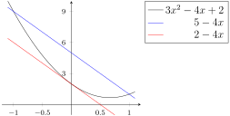

Section 3.13 The Mean Value Theorem
Consider the following situation. Two towns are separated by a 120km long stretch of road. The police in town \(A\) observe a car leaving at 1pm. Their colleagues in town \(B\) see the car arriving at 2pm. After a quick phone call between the two police stations, the driver is issued a fine for going \(120km/h\) at some time between 1pm and 2pm. It is intuitively obvious 1 that, because his average velocity was \(120km/h\text{,}\) the driver must have been going at least \(120km/h\) at some point. From a knowledge of the average velocity of the car, we are able to deduce something about an instantaneous velocity 2 .
Let us turn this around a little bit. Consider the premise of a 90s action film 3 — a bus must travel at a velocity of no less than \(80km/h\text{.}\) Being a bus, it is unable to go faster than, say, \(120km/h\text{.}\) The film runs for about 2 hours, and lets assume that there is about thirty minutes of non-action — so the bus' velocity is constrained between \(80\) and \(120km/h\) for a total of \(1.5\) hours.
It is again obvious that the bus must have travelled between \(80 \times 1.5 = 120\) and \(120\times 1.5 = 180km\) during the film. This time, from a knowledge of the instantaneous rate of change of position — the derivative — throughout a 90 minute time interval, we are able to say something about the net change of position during the 90 minutes.
In both of these scenarios we are making use of a piece of mathematics called the Mean Value Theorem. It says that, under appropriate hypotheses, the average rate of change \(\frac{f(b)-f(a)}{b-a}\) of a function over an interval is achieved exactly by the instantaneous rate of change \(f'(c)\) of the function at some 4 (unknown) point \(a\le c\le b\text{.}\) We shall get to a precise statement in Theorem 3.13.5. We start working up to it by first considering the special case in which \(f(a)=f(b)\text{.}\)
Subsection 3.13.1 Rolle's Theorem
Theorem 3.13.1. Rolle's theorem.
Let \(a\) and \(b\) be real numbers with \(a \lt b\text{.}\) And let \(f\) be a function so that
- \(f(x)\) is continuous on the closed interval \(a\le x\le b\text{,}\)
- \(f(x)\) is differentiable on the open interval \(a \lt x \lt b\text{,}\) and
- \(\displaystyle f(a)=f(b)\)
then there is a \(c\) strictly between \(a\) and \(b\text{,}\) i.e. obeying \(a \lt c \lt b\text{,}\) such that
Again, like the two scenarios above, this theorem says something intuitively obvious. Consider — if you throw a ball straight up into the air and then catch it, at some time in between the throw and the catch it must be stationary. Translating this into mathematical statements, let \(s(t)\) be the height of the ball above the ground in metres, and let \(t\) be time from the moment the ball is thrown in seconds. Then we have
Then we know there is some time in between — say at \(t=c\) — when the ball is stationary (in this case when the ball is at the top of its trajectory). I.e.
Rolle's theorem guarantees that for any differentiable function that starts and ends at the same value, there will always be at least one point between the start and finish where the derivative is zero.

There can, of course, also be multiple points at which the derivative is zero — but there must always be at least one. Notice, however, the theorem 5
does not tell us the value of \(c\text{,}\) just that such a \(c\) must exist.
Example 3.13.2. A simple application of Rolle's theorem.
We can use Rolle's theorem to show that the function
has a point \(c\) between \(0\) and \(\frac{3\pi}{2}\) so that \(f'(c)=0\text{.}\)
To apply Rolle's theorem we first have to show the function satisfies the conditions of the theorem on the interval \([0,\frac{3\pi}{2}]\text{.}\)
- Since \(f\) is the sum of sine and cosine it is continuous on the interval and also differentiable on the interval.
- Further, since\begin{align*} f(0) &= \sin 0 - \cos 0 = 0-1 = -1\\ f\left(\frac{3\pi}{2}\right) &= \sin\frac{3\pi}{2} - \cos\frac{3\pi}{2} = -1-0 = -1 \end{align*}we can now apply Rolle's theorem.
- Rolle's theorem implies that there must be a point \(c \in (0,3\pi/2)\) so that \(f'(c) =0\text{.}\)
While Rolle's theorem doesn't tell us the value of \(c\text{,}\) this example is sufficiently simple that we can find it directly.
Hence \(c = \frac{3\pi}{4}\text{.}\) We have sketched the function and the relevant points below.

A more substantial application of Rolle's theorem (in conjunction with the intermediate value theorem — Theorem 2.6.12) is to show that a function does not have multiple zeros in an interval:
Example 3.13.3. Showing an equation has exactly 1 solution.
Show that the equation \(2x-1=\sin(x)\) has exactly 1 solution.
-
Start with a rough sketch of each side of the equation

This seems like it should be true.
- Notice that the problem we are trying to solve is equivalent to showing that the function\begin{align*} f(x) &= 2x-1-\sin(x) \end{align*}has only a single zero.
- Since \(f(x)\) is the sum of a polynomial and a sine function, it is continuous and differentiable everywhere. Thus we can apply both the IVT and Rolle's theorem.
- Notice that \(f(0)=-1\) and \(f(2) = 4-1-\sin(2) = 3-\sin(2) \geq 2\text{,}\) since \(-1\leq \sin(2) \leq 1\text{.}\) Thus by the IVT we know there is at least one number \(c\) between \(0\) and \(2\) so that \(f(c)=0\text{.}\)
- But our job is only half done — this shows that there is at least one zero, but it does not tell us there is no more than one. We have more work to do, and Rolle's theorem is the tool we need.
-
Consider what would happen if \(f(x)\) is zero in 2 places — that is, there are numbers \(a,b\) so that \(f(a)=f(b)=0\text{.}\)
- Since \(f(x)\) is differentiable everywhere and \(f(a)=f(b)=0\text{,}\) we can apply Rolle's theorem.
- Hence we know there is a point \(c\) between \(a\) and \(b\) so that \(f'(c)=0\text{.}\)
- But let us examine \(f'(x)\text{:}\)\begin{align*} f'(x) &= 2- \cos x \end{align*}Since \(-1\leq \cos x \leq 1\text{,}\) we must have that \(f'(x) \geq 1\text{.}\)
- But this contradicts Rolle's theorem which tells us there must be a point at which the derivative is zero.
Thus the function cannot be zero at two different places — otherwise we'd have a contradiction.
We can actually nail down the value of \(c\) using the bisection approach we used in example 2.6.15. If we do this carefully we find that \(c \approx 0.887862\dots\)
Subsection 3.13.2 Back to the MVT
Rolle's theorem can be generalised in a straight-forward way; given a differentiable function \(f(x)\) we can still say something about \(\diff{f}{x}\text{,}\) even if \(f(a) \neq f(b)\text{.}\) Consider the following sketch:

All we have done is tilt the picture so that \(f(a) \lt f (b)\text{.}\) Now we can no longer guarantee that there will be a point on the graph where the tangent line is horizontal, but there will be a point where the tangent line is parallel to the secant joining \((a, f(a))\) to \((b, f(b))\text{.}\)
To state this in terms of our first scenario back at the beginning of this section, suppose that you are driving along the \(x\)–axis. At time \(t=a\) you are at \(x=f(a)\) and at time \(t=b\) you are at \(x=f(b)\text{.}\) For simplicity, let's suppose that \(b \gt a\) and \(f(b)\ge f(a)\text{,}\) just like in the above sketch. Then during the time interval in question you travelled a net distance of \(f(b)-f(a)\text{.}\) It took you \(b-a\) units of time to travel that distance, so your average velocity was \(\frac{f(b)-f(a)}{b-a}\text{.}\) You may very well have been going faster than \(\frac{f(b)-f(a)}{b-a}\) part of the time and slower than \(\frac{f(b)-f(a)}{b-a}\) part of the time. But it is reasonable to guess that at some time between \(t=a\) and \(t=b\) your instantaneous velocity was exactly \(\frac{f(b)-f(a)}{b-a}\text{.}\) The mean value theorem says that, under reasonable assumptions about \(f\text{,}\) this is indeed the case.
Theorem 3.13.5. The mean value theorem.
Let \(a\) and \(b\) be real numbers with \(a \lt b\text{.}\) And let \(f(x)\) be a function so that
- \(f(x)\) is continuous on the closed interval \(a \leq x \leq b\text{,}\) and
- \(f(x)\) is differentiable on the open interval \(a \lt x \lt b\)
then there is a \(c \in (a,b)\text{,}\) such that
which we can also express as
\begin{align*} f(b)&=f(a)+f'(c)(b-a). \end{align*}Let us start to explore the mean value theorem — which is very frequently known as the MVT. A simple example to start:
Example 3.13.6. Apply MVT to a polynomial.
Consider the polynomial \(f(x)=3x^2-4x+2\) on \([-1,1]\text{.}\)
- Since \(f\) is a polynomial it is continuous on the interval and also differentiable on the interval. Hence we can apply the MVT.
- The MVT tells us that there is a point \(c \in (-1,1)\) so that\begin{align*} f'(c) &= \frac{f(1)-f(-1)}{1-(-1)} = \frac{1-9}{2} =-4 \end{align*}
This example is sufficiently simple that we can find the point \(c\) and the corresponding tangent line:
- The derivative is\begin{align*} f'(x) &= 6x-4 \end{align*}
- So we need to solve \(f'(c)=-4\text{:}\)\begin{align*} 6c-4 &= -4 \end{align*}which tells us that \(c=0\text{.}\)
- The tangent line has slope \(-4\) and passes through \((0,f(0))=(0,2)\text{,}\) and so is given by\begin{align*} y &= -4x+2 \end{align*}
- The secant line joining \((-1,f(-1))=(-1,9)\) to \((1,f(1))=(1,1)\) is just\begin{align*} y &= 5-4x \end{align*}
-
Here is a sketch of the curve and the two lines:

Example 3.13.7. MVT, speed and distance.
We can return to our initial car-motivated examples. Say you are driving along a straight road in a car that can go at most \(80km/h\text{.}\) How far can you go in 2 hours? — the answer is easy, but we can also solve this using MVT.
- Let \(s(t)\) be the position of the car in \(km\) at time \(t\) measured in hours.
- Then \(s(0)=0\) and \(s(2)=q\text{,}\) where \(q\) is the quantity that we need to bound.
- We are told that \(| s'(t) | \leq 80\text{,}\) or equivalently\begin{gather*} -80 \leq s'(t) \leq 80 \end{gather*}
- By the MVT there is some \(c\) between 0 and 2 so that\begin{align*} s'(c) &= \frac{q-0}{2} = \frac{q}{2} \end{align*}
- Now since \(-80 \leq s'(c) \leq 80\) we must have \(-80 \leq q/2 \leq 80\) and hence \(-160 \leq q=s(2) \leq 160\text{.}\)
More generally if we have some information about the derivative, then we can use the MVT to leverage this information to tell us something about the function.
Example 3.13.8. Using MVT to bound a function.
Let \(f(x)\) be a differentiable function so that
Obtain upper and lower bounds on \(f(5)\text{.}\)
Okay — what do we do?
- Since \(f(x)\) is differentiable we can use the MVT.
- Say \(f(5)=q\text{,}\) then the MVT tells us that there is some \(c\) between \(1\) and \(5\) such that\begin{align*} f'(c) &=\frac{q-10}{5-1} = \frac{q-10}{4} \end{align*}
- But we know that \(-1 \leq f'(c) \leq 2\text{,}\) so\begin{align*} -1 &\leq f'(c) \leq 2\\ -1 & \leq \frac{q-10}{4} \leq 2\\ -4 & \leq q-10 \leq 8\\ 6 \leq q \leq 18 \end{align*}
- Thus we must have \(6 \leq f(5) \leq 18\text{.}\)
Subsection 3.13.3 (Optional) — Why is the MVT True
We won't give a real proof for this theorem, but we'll look at a picture which shows why it is true. Here is the picture. It contains a sketch of the graph of \(f(x)\text{,}\) with \(x\) running from \(a\) to \(b\text{,}\) as well as a line segment which is the secant of the graph from the point \(\big(a\,,f(a)\big)\) to the point \(\big(b\,,f(b)\big)\text{.}\) The slope of the secant is exactly \(\frac{f(b)-f(a)}{b-a}\text{.}\)

Remember that we are looking for a point, \(\big(c\,,f(c)\big)\text{,}\) on the graph of \(f(x)\) with the property that \(f'(c)=\frac{f(b)-f(a)}{b-a}\text{,}\) i.e. with the property that the slope of the tangent line at \(\big(c\,,f(c)\big)\) is the same as the slope of the secant. So imagine that you start moving the secant upward, carefully keeping the moved line segment parallel to the secant. So the slope of the moved line segment is always exactly \(\frac{f(b)-f(a)}{b-a}\text{.}\) When we first start moving the line segment it is not tangent to the curve — it crosses the curve. This is illustrated in the figure by the second line segment from the bottom. If we move the line segment too far it does not touch the curve at all. This is illustrated in the figure by the top segment. But if we stop moving the line segment just before it stops intersecting the curve at all, we get exactly the tangent line to the curve at the point on the curve that is farthest from the secant. This tangent line has exactly the desired slope. This is illustrated in the figure by the third line segment from the bottom.
Subsection 3.13.4 Be Careful with Hypotheses
The mean value theorem has hypotheses — \(f(x)\) has to be continuous for \(a\le x\le b\) and has to be differentiable for \(a \lt x \lt b\text{.}\) If either hypothesis is violated, the conclusion of the mean value theorem can fail. That is, the curve \(y=f(x)\) need not have a tangent line at some \(x=c\) between \(a\) and \(b\) whose slope, \(f'(c)\text{,}\) is the same as the slope, \(\frac{f(b)-f(a)}{b-a}\text{,}\) of the secant joining the points \(\big(a\,,f(a)\big)\) and \(\big(b\,,f(b)\big)\) on the curve. If \(f'(x)\) fails to exist for even a single value of \(x\) between \(a\) and \(b\text{,}\) all bets are off. The following two examples illustrate this.
Example 3.13.9. MVT doesn't work here.
For the first “bad” example, \(a=0\text{,}\) \(b=2\) and
\(f(x) = \begin{cases} 0 & \text{if }x \le 1 \\ 1 & \text{if }x \gt 1 \end{cases}\)

For this example, \(f'(x)=0\) at every \(x\) where it is defined. That is, at every \(x\ne 1\text{.}\) But the slope of the secant joining \(\big(a\,,f(a)\big)=(0,0)\) and \(\big(b\,,f(b)\big)=(2,1)\) is \(\frac{1}{2}\text{.}\)
Example 3.13.10. MVT doesn't work here either.
For the second “bad” example, \(a=-1\text{,}\) \(b=1\) and \(f(x)=|x|\text{.}\) For this function
\(f'(x) = \begin{cases} -1 & \text{if }x \lt 0 \\ \text{undefined} & \text{if }x=0 \\ 1 & \text{if }x \gt 0 \end{cases}\)

For this example, \(f'(x)=\pm 1\) at every \(x\) where it is defined. That is, at every \(x\ne 0\text{.}\) But the slope of the secant joining \(\big(a\,,f(a)\big)=(-1,1)\) and \(\big(b\,,f(b)\big)=(1,1)\) is \(0\text{.}\)
Example 3.13.11. MVT does work on this one.
Here is one “good” example, where the hypotheses of the mean value theorem are satisfied. Let \(f(x)=x^2\text{.}\) Then \(f'(x)=2x\text{.}\) For any \(a \lt b\text{,}\)
So \(f'(c)=2c\) is exactly \(\frac{f(b)-f(a)}{b-a}\) when \(c=\frac{a+b}{2}\text{,}\) which, in this example, happens to be exactly half way between \(x=a\) and \(x=b\text{.}\)

A simple consequence of the mean value theorem is that if you know the sign of \(f'(c)\) for all \(c\)'s between \(a\) and \(b\text{,}\) with \(b \gt a\text{,}\) then \(f(b)-f(a) = f'(c) (b-a)\) must have the same sign.
Corollary 3.13.12. Consequences of the mean value theorem.
Let \(A\) and \(B\) be real numbers with \(A \lt B\text{.}\) Let function \(f(x)\) be defined and continuous on the closed interval \(A\le x\le B\) and be differentiable on the open interval \(A \lt x \lt B\text{.}\)
-
If \(f'(c)=0\) for all \(A \lt c \lt B\text{,}\) then \(f(b)=f(a)\) for all \(A\le a \lt b\le B\text{.}\)
— That is, \(f(x)\) is constant on \(A\le x\le B\text{.}\)
-
If \(f'(c)\ge 0\) for all \(A \lt c \lt B\text{,}\) then \(f(b)\ge f(a)\) for all \(A\le a\le b\le B\text{.}\)
— That is, \(f(x)\) is increasing on \(A\le x\le B\text{.}\)
-
If \(f'(c)\le 0\) for all \(A \lt c \lt B\text{,}\) then \(f(b)\le f(a)\) for all \(A\le a \le b\le B\text{.}\)
— That is, \(f(x)\) is decreasing on \(A\le x\le B\text{.}\)
It is not hard to see why the above is true:
- Say \(f'(x)=0\) at every point in the interval \([A,B]\text{.}\) Now pick any \(a,b \in [A,B]\) with \(a \lt b\text{.}\) Then the MVT tells us that there is \(c \in (a,b)\) so that\begin{align*} f'(c) &= \frac{f(b)-f(a)}{b-a} \end{align*}If \(f(b) \neq f(a)\) then we must have that \(f'(c) \neq 0\) — contradicting what we are told about \(f'(x)\text{.}\) Thus we must have that \(f(b)=f(a)\text{.}\)
- Similarly, say \(f'(x) \geq 0\) at every point in the interval \([A,B]\text{.}\) Now pick any \(a,b \in [A,B]\) with \(a \lt b\text{.}\) Then the MVT tells us that there is \(c \in (a,b)\) so that\begin{align*} f'(c) &= \frac{f(b)-f(a)}{b-a} \end{align*}Since \(b \gt a\text{,}\) the denominator is positive. Now if \(f(b) \lt f(a)\) the numerator would be negative, making the right-hand side negative, and contradicting what we are told about \(f'(x)\text{.}\) Hence we must have \(f(b) \gt f(a)\text{.}\)
A nice corollary of the above corollary is the following:
Corollary 3.13.13.
If \(f'(x) = g'(x)\) for all \(x\) in the open interval \((a,b)\text{,}\) then \(f-g\) is a constant on \((a,b)\text{.}\) That is \(f(x)=g(x)+c\text{,}\) where \(c\) is some constant.
We can prove this by setting \(h(x)=f(x)-g(x)\text{.}\) Then \(h'(x)=0\) and so the previous corollary tells us that \(h(x)\) is constant.
Example 3.13.14. Summing \(\arcsin\) and \(\arccos\).
Using this corollary we can prove results like the following:
How does this work? Let \(f(x) = \arcsin x + \arccos x\text{.}\) Then
Thus \(f\) must be a constant. To find out which constant, we can just check its value at a convenient point, like \(x=0\text{.}\)
Since the function is constant, this must be the value.
Exercises 3.13.5 Exercises
1.
Suppose a particular caribou has a top speed of 70 kph, and in one year it migrates 5000 km. What do you know about the amount of time the caribou spent travelling during its migration?
How long would it take the caribou to travel 5000 km, travelling at its top speed?
The caribou spent at least about 71 and a half hours travelling during its migration (probably much more) in one year.
We know the top speed of the caribou, so we can use this to give the minimum possible number of hours the caribou spent travelling during its migration. If the caribou travels at 70kph, it will take \((5000 \mathrm{km})\left(\dfrac{1 \mathrm{hr}}{70 \mathrm{km}}\right) \approx 71.4 \mathrm{hrs}\) to travel 5000 kilometres. Probably the caribou wasn't sprinting the whole time, so probably it took it longer than that, but we can only say for sure that the caribou spent at least about 71.4 hours migrating.
2.
Suppose a migrating sandhill crane flew 240 kilometres in one day. What does the mean value theorem tell you about its speed during that day?
Let \(f(x)\) be the position of the crane, where \(x\) is the hour of the day.
At some point during the day, the crane was travelling at exactly 10 kph.
If \(f(x)\) is the position of the crane at time \(x\text{,}\) measured in hours, then (if we let \(x=0\) be the beginning of the day) we know that \(f(24)-f(0)=240\text{.}\) Since \(f(x)\) is the position of the bird, \(f(x)\) is continuous and differentiable. So, the MVT says there is a \(c\) in \((0,24)\) such that \(f'(x)=\dfrac{f(24)-f(0)}{24-0}=\dfrac{240}{24}=10\text{.}\) That is, at some point \(c\) during the day, the speed of the crane was exactly 10 kph.
3.
Below is the graph of \(y=f(x)\text{,}\) where \(x\) is continuous on \([a,b]\) and differentiable on \((a,b)\text{.}\) Mark on the graph the approximate location of a value \(c\) guaranteed by the mean value theorem.
For an example, look at Figure 3.13.4.
One possible answer:
Another possible answer:
The MVT guarantees there is some point \(c\) strictly between \(a\) and \(b\) where the tangent line to \(f(x)\) at \(x=c\) has the same slope as the secant line of \(f(x)\) from \(x=a\) to \(x=b\text{.}\) So, let's start by drawing in the secant line.
What we're looking for is a point on the curve where the tangent line is parallel to this secant line. In fact, there are two.

So, either of the two values \(c_1\) and \(c_2\) marked below can serve as the point guaranteed by the MVT:
4.
Give a function \(f(x)\) with the properties that:
- \(f(x)\) is differentiable on the open interval \(0 \lt x \lt 10\)
- \(f(0)=0\text{,}\) \(f(10)=10\)
but for all \(c \in (0,10)\text{,}\) \(f'(c)=0\text{.}\)
How does this question differ from the statement of the mean value theorem?
One possible answer: \(f(x) = \left\{\begin{array}{lr} 0&x \neq 10\\ 10&x=10 \end{array}\right.\)
Another answer: \(f(x) = \left\{\begin{array}{lr} 10&x \neq 0\\ 0&x=0 \end{array}\right.\)
Yet another answer: \(f(x) = \left\{\begin{array}{ll} 5&x \neq 0, 10\\ 10&x= 10\\ 0&x=0 \end{array}\right.\)
Since \(f(x)\) is differentiable for all \(x \in (0,10)\text{,}\) then \(f(x)\) is also continuous for all \(x \in (0,10)\text{.}\) If \(f(x)\) were continuous on the closed interval \([0,10]\text{,}\) then the MVT would guarantee \(f'(x)=\dfrac{f(10)-f(0)}{10-0}=1\) for some \(c \in (0,10)\text{;}\) however, this is not the case. So, it must be that \(f(x)\) is continuous for all \(x \in (0,10)\text{,}\) but not for all \(x \in [0,10]\text{.}\)
Since \(f'(c)=0\) for \(c \in (0,10)\text{,}\) that means \(f\) is constant on that interval. So, \(f(x)\) is a function like this:
where the height of the constant function can be anything.
So, one possible answer is \(f(x) = \left\{\begin{array}{lr} 0&x \neq 10\\ 10&x=10 \end{array}\right.\text{.}\)
5.
For each of the parts below, sketch a function \(f(x)\) (different in each part) that is continuous and differentiable over all real numbers, with \(f(1)=f(2)=0\text{,}\) and with the listed property, or explain why no such function exists.
- \(f'(c)=0\) for no point \(c \in (1,2)\)
- \(f'(c)=0\) for exactly one point \(c \in (1,2)\)
- \(f'(c)=0\) for exactly five points \(c \in (1,2)\)
- \(f'(c)=0\) for infinitely many points \(c \in (1,2)\)
(a) No such function is possible: Rolle's Theorem guarantees \(f'(c)=0\) for at least one point \(c \in (1,2)\text{.}\)
For the other functions, examples are below, but many answers are possible.
(a) No such function is possible: Rolle's Theorem guarantees \(f'(c)=0\) for at least one point \(c \in (1,2)\text{.}\)
For the other functions, examples are below, but many answers are possible.
6.
Suppose you want to show that a point exists where the function \(f(x)=\sqrt{|x|}\) has a tangent line with slope \(\frac{1}{13}\text{.}\) Find the mistake(s) in the following work, and give a correct proof.
The function \(f(x)\) is continuous and differentiable over all real numbers, so the mean value theorem applies. \(f(-4)=2\) and \(f(9)=3\text{,}\) so by the mean value theorem, there exists some \(c \in (-4,9)\) such that \(f'(x) = \dfrac{3-2}{9-(-4)}=\dfrac{1}{13}\text{.}\)
Where is \(f(x)\) differentiable?
The function \(f(x)\) is continuous over all real numbers, but it is only differentiable when \(x \neq 0\text{.}\) So, if we want to apply the MVT, our interval must consist of only positive numbers or only negative numbers: the interval \((-4,13)\) is not valid.
It is possible to use the mean value theorem to prove what we want: if \(a=1\) and \(b=144\text{,}\) then \(f(x)\) is differentiable over the interval \((1,144)\) (since 0 is not contained in that interval), and \(f(x)\) is continuous everywhere, so by the mean value theorem there exists some point \(c\) where \(f'(x)=\dfrac{\sqrt{|144|}-\sqrt{|1|}}{144-1}=\dfrac{11}{143}=\dfrac{1}{13}\text{.}\)
That being said, an easier way to prove that a point exists is to simply find it--without using the MVT. When \(x \gt 0\text{,}\) \(f(x)=\sqrt{x}\text{,}\) so \(f'(x)=\dfrac{1}{2\sqrt {x}}\text{.}\) Then \(f'\left(\dfrac{169}{4}\right)=\dfrac{1}{13}\text{.}\)
The function \(f(x)\) is continuous over all real numbers, but it is only differentiable when \(x \neq 0\text{.}\) So, if we want to apply the MVT, our interval must consist of only positive numbers or only negative numbers: the interval \((-4,13)\) is not valid.
It is possible to use the mean value theorem to prove what we want: if \(a=1\) and \(b=144\text{,}\) then \(f(x)\) is differentiable over the interval \((1,144)\) (since 0 is not contained in that interval), and \(f(x)\) is continuous everywhere, so by the mean value theorem there exists some point \(c\) where \(f'(x)=\dfrac{\sqrt{|144|}-\sqrt{|1|}}{144-1}=\dfrac{11}{143}=\dfrac{1}{13}\text{.}\)
That being said, an easier way to prove that a point exists is to simply find it--without using the MVT. When \(x \gt 0\text{,}\) \(f(x)=\sqrt{x}\text{,}\) so \(f'(x)=\dfrac{1}{2\sqrt {x}}\text{.}\) Then \(f'\left(\dfrac{169}{4}\right)=\dfrac{1}{13}\text{.}\)
7. 2015Q.
Let \(f(x)=x^2-2\pi x+ \cos(x)-1\text{.}\) Show that there exists a real number \(c\) such that \(f'(c)=0\text{.}\)
To use Rolle's Theorem, you will want two values where the function is zero. If you're stuck finding one of them, think about when \(x^2-2\pi x\) is equal to zero.
We note that \(f(0)=f(2\pi)=0\text{.}\) Then using the Mean Value Theorem (note that the function is differentiable for all real numbers), we conclude that there exists \(c\) in \((0,2\pi)\) such that
We note that \(f(0)=f(2\pi)=0\text{.}\) Then using the Mean Value Theorem (note that the function is differentiable for all real numbers), we conclude that there exists \(c\) in \((0,2\pi)\) such that
8. 2015Q.
Let \(f(x)=e^x + (1-e)x^2 - 1\text{.}\) Show that there exists a real number \(c\) such that \(f'(c)=0\text{.}\)
We note that \(f(0)=f(1)=0\text{.}\) Then using the Mean Value Theorem (note that the function is differentiable for all real numbers), we get that there exists \(c\in (0,1)\) such that
We note that \(f(0)=f(1)=0\text{.}\) Then using the Mean Value Theorem (note that the function is differentiable for all real numbers), we get that there exists \(c\in (0,1)\) such that
9. 2015Q.
Let \(f(x)=\sqrt{3 + \sin(x)} + (x - \pi)^2\text{.}\) Show that there exists a real number \(c\) such that \(f'(c)=0\text{.}\)
We note that \(f(0)=f(2\pi)=\sqrt{3} + \pi^2\text{.}\) Then using the Mean Value Theorem (note that the function is differentiable for all real numbers since \(3+\sin x \gt 0\)), we get that there exists \(c\in (0,2\pi)\) such that
We note that \(f(0)=f(2\pi)=\sqrt{3} + \pi^2\text{.}\) Then using the Mean Value Theorem (note that the function is differentiable for all real numbers since \(3+\sin x \gt 0\)), we get that there exists \(c\in (0,2\pi)\) such that
10. 2015Q.
Let \(f(x)=x\cos(x) - x\sin(x)\text{.}\) Show that there exists a real number \(c\) such that \(f'(c)=0\text{.}\)
We note that \(f(0)=0\) and \(f(\pi/4)=0\text{.}\) Then using the Mean Value Theorem (note that the function is differentiable for all real numbers), we get that there exists \(c\in (0,\pi/4)\) such that
We note that \(f(0)=0\) and \(f(\pi/4)=0\text{.}\) Then using the Mean Value Theorem (note that the function is differentiable for all real numbers), we get that there exists \(c\in (0,\pi/4)\) such that
11.
How many roots does the function \(f(x)=3x-\sin x\) have?
To show that there are exactly \(n\) roots, you need to not only show that \(n\) exist, but also that there are not more than \(n\text{.}\)
\(1\)
By inspection, we see \(x=0\) is a root of \(f(x)\text{.}\) The question now is whether there could possibly be other roots. Since \(f(x)\) is differentiable over all real numbers, if there is another root \(a\text{,}\) then by Rolle's Theorem, \(f'(c)=0\) for some \(c\) strictly between \(0\) and \(a\text{.}\) However, \(f'(x)=3-\cos x\) is never zero. So, there is no second root: \(f(x)\) has precisely one root.
12.
How many roots does the function \(f(x)=\dfrac{(4x+1)^4}{16}+x\) have?
To show that there are exactly \(n\) roots, you need to not only show that \(n\) exist, but also that there are not more than \(n\text{.}\) If you can't explicitly find the root(s), you can use the intermediate value theorem to show they exist.
\(2\)
The function \(f(x)\) is continuous and differentiable over all real numbers. If \(a\) and \(b\) are distinct roots of \(f(x)\text{,}\) then \(f'(c)=0\) for some \(c\) strictly between \(a\) and \(b\) (Rolle's Theorem). So, let's think about \(f'(x)\text{.}\)
This is simple enough that we can find its zero explicitly:
Hence \(f'(c)=0\) only when \(c=\dfrac{-1}{2}\text{.}\) That the derivative only has a single zero is very useful. It means (via Rolle's theorem) that if \(f(x)\) has distinct roots \(a\) and \(b\) with \(a \lt b\text{,}\) then we must have \(a \lt \dfrac{-1}{2} \lt b\text{.}\) This also means that \(f(x)\) cannot have 3 distinct roots \(a,b\) and (say) \(q\) with \(a \lt b \lt q\text{,}\) because then Rolle's theorem would imply that \(f'(x)\) would have two zeros — one between \(a\) and \(b\) and another between \(b\) and \(q\text{.}\)
We've learned that \(f(x)\) has at most two roots, and we've learned something about where those roots can exist, if there are indeed two of them. But that means \(f(x)\) could have 0, 1, or 2 roots.
It's not easy to find a root of \(f(x)\) by inspection. But we can get a good enough picture of the graph of \(y=f(x)\) to tell exactly how many roots there are, just by exploiting the following properties of \(f(x)\) and \(f'(x)\text{.}\)
- As \(x\) tends to \(\pm \infty\text{,}\) \(f(x)\) tends to \(+\infty\text{.}\)
- The derivative \(f'(x)=(4x+1)^3+1\) is negative for \(x \lt -\frac{1}{2}\) and is positive for \(x \gt -\frac{1}{2}\text{.}\) That is, \(f(x)\) is decreasing for \(x \lt -\frac{1}{2}\) and increasing for \(x \gt -\frac{1}{2}\text{.}\)
- \(f\left(-\frac{1}{2}\right)=\frac{1}{16}-\frac{1}{2} \lt 0\text{.}\)
This means the function must look something like the graph below:
except we are unsure of the locations of the \(x\)-intercepts. At present we only know that one is to the left of \(x=1/2\) and one is to the right.
Note what happens to \(f(x)\) as \(x\) increases from strongly negative values to strongly positive values.
- When \(x\) is large and negative, \(f(x) \gt 0\text{.}\)
- As \(x\) increases, \(f(x)\) decreases continuously until \(x=-\frac{1}{2}\text{,}\) where \(f(x) \lt 0\text{.}\) In particular, since \(f(-1)=\frac{65}{16} \gt 0\) and \(f\big(-\frac{1}{2}\big) \lt 0\) and \(f(x)\) is continuous, the intermediate value theorem guarantees that \(f(x)\) takes the value zero for some \(x\) between \(-\frac{1}{2}\) and \(-1\text{.}\) More descriptively put, as \(x\) increases from hugely negative numbers to \(-\frac{1}{2}\text{,}\) \(f(x)\) passes through zero exactly once.
- As \(x\) increases beyond \(-\frac{1}{2}\text{,}\) \(f(x)\) increases continuously, starting negative and becoming very large and positive when \(x\) becomes large and positive. In particular, since \(f(0)=\frac{1}{16} \gt 0\) and \(f\big(-\frac{1}{2}\big) \lt 0\) and \(f(x)\) is continuous, the intermediate value theorem guarantees that \(f(x)\) takes the value zero for some \(x\) between \(-\frac{1}{2}\) and \(0\text{.}\) So, as \(x\) increases from \(-\frac{1}{2}\) to near \(+\infty\text{,}\) \(f(x)\) again passes through zero exactly once.
So \(f(x)\) must have exactly two roots, one with \(x \lt -\frac{1}{2}\) and one with \(x \gt -\frac{1}{2}\text{.}\)
13.
How many roots does the function \(f(x)=x^3+\sin\left(x^5\right)\) have?
If \(f(x)=0\text{,}\) then \(|x^3|=\left|\sin\left(x^5\right)\right| \leq 1\text{.}\) When \(|x| \lt 1\text{,}\) is \(\cos(x^5)\) positive or negative?
\(1\)
- We can see by inspection that \(f(0)=0\text{,}\) so there is at least one root.
- To hunt for other roots, notice than when \(f(x)=0\text{,}\) \(x^3=\sin\left(x^5\right)\text{,}\) and since the sine function only takes on values in \([-1,1]\text{,}\) this means \(-1 \leq x^3 \leq 1\text{.}\) That is, all roots of \(f(x)\) are in the interval \([-1,1]\text{.}\) (An equivalent way to see this is to notice that for all \(x \gt 1\text{,}\) \(f(x) \gt 0\text{,}\) and for all \(x \lt 1\text{,}\) \(f(x) \lt 0\text{.}\))
- If there is a root \(a \neq 0\text{,}\) then by Rolle's Theorem (since \(f(x)\) is continuous and differentiable for all real numbers) \(f'(c)=0\) for some \(c\) strictly between 0 and \(a\text{.}\) In particular, since we already know any roots \(a\) will be between \(-1\) and \(1\text{,}\) if \(f(x)\) has two roots then \(f'(c)=0\) for some \(c \in (-1,0) \cup (0,1)\text{.}\)
-
\begin{equation*} f'(x)=3x^2+5x^4\cos\left(x^5\right)=x^2\left(3+5x^2\cos\left(x^5\right)\right) \end{equation*}So, if \(f'(x)=0\text{,}\) then \(x=0\) or \(\left(3+5x^2\cos\left(x^5\right)\right)=0\text{.}\) If \(x \in (-1,0) \cup (0,1)\text{,}\) then \(|x| \lt 1\) and so \(|x^5| \lt 1 \lt \frac{\pi}{2}\text{,}\) so \(\cos\left(x^5\right) \gt 0\text{.}\) Then \(3+5x^2\cos\left(x^5\right) \gt 3\text{,}\) so \(f'(x) \neq 0\text{.}\) That is, there is no \(c \in (-1,0) \cup (0,1)\) with \(f'(c)=0\text{.}\) Therefore, following our last bullet point, \(f(x)\) has only one root.
Note here that \(f'(x)\) has many zeroes--infinitely many, in fact. However, \(x=0\) is the only root of \(f'(x)\) in the interval \((-1,1)\text{.}\)
14.
How many positive-valued solutions does the equation \(e^x=4\cos(2x)\) have?
Let \(f(x)=e^x-4\cos(2x)\text{,}\) and use Rolle's Theorem. What is the interval where \(f(x)\) can have a positive root?
\(1\)
We are to find the number of positive solutions to the equation \(e^x = 4\cos(2x)\text{.}\) The figure below contains the graphs of \(y=e^x\) and \(y= 4\cos(2x)\text{.}\) The solutions to \(e^x = 4\cos(2x)\) are precisely the \(x\)'s where \(y=e^x\) and \(y= 4\cos(2x)\) cross.

It sure looks like there is exactly one crossing with \(x\ge 0\) and that one crossing is somewhere between \(x=0\) and \(x=1\text{.}\) Indeed since \(\big[e^x- 4\cos(2x)\big]_{x=0} = -3 \lt 0\) and \(\big[e^x- 4\cos(2x)\big]_{x=1} \gt e \gt 0\) and \(f(x)=e^x- 4\cos(2x)\) is continuous, the intermediate value theorem guarantees that there is at least one root with \(0 \lt x \lt 1\text{.}\)
We still have to show that there is no second root — even if our graphs are not accurate.
Recall that the range of the cosine function is \([-1,1]\text{.}\) If \(e^x=4\cos(2x)\text{,}\) then \(e^x \leq 4\text{,}\) so \(x \leq \log(4)\approx 1.39\text{.}\) So, we only need to search for roots of \(f(x)\) on the interval \((0,1.4)\text{:}\) we are guaranteed there are no roots elsewhere. Over this interval, \(2x \in (0,2.8)\text{,}\) so \(\sin(2x) \gt 0\text{,}\) and thus \(f'(x)=e^x+8\sin(2 x) \gt 0\text{.}\) Since \(f'(x)\) has no roots in \((0,1.4)\text{,}\) we conclude by Rolle's Theorem that \(f(x)\) has at most one root in \((0,1.4)\) (and so at most one positive root total). Since we've already found that a root of \(f(x)\) exists in \((0,1)\text{,}\) we conclude \(e^x=4\cos(2x)\) has precisely one positive-valued solution.
15. 1997H.
Let \(f(x)=3x^5-10x^3+15x+a\text{,}\) where \(a\) is some constant.
- Prove that, regardless of the value \(a\text{,}\) \(f'(x) \gt 0\) for all \(x\) in \((-1,1)\text{.}\)
- Prove that, regardless of the value \(a\text{,}\) \(f(x)=3x^5-10x^3+15x+a\) has at most one root in \([-1,1]\text{.}\)
For 3.13.5.15.b, what does Rolle's Theorem tell you has to happen in order for \(f(x)\) to have more than one root in \([-1,1]\text{?}\)
The derivative is nonnegative everywhere. The only values of \(x\) for which \(f'(x)=0\) are \(1\) and \(-1\text{,}\) so \(f'(x) \gt 0\) for every \(x\) in \((-1,1)\text{.}\)
3.13.5.15.b If \(f(x)\) has two roots \(a\) and \(b\) in \([-1,1]\text{,}\) then by Rolle's Theorem, \(f'(c)=0\) for some \(x\) strictly between \(a\) and \(b\text{.}\) But since \(a\) and \(b\) are in \([-1,1]\text{,}\) and \(c\) is between \(a\) and \(b\text{,}\) that means \(c\) is in \((-1,1)\text{;}\) however, we know for every \(c\) in \((-1,1)\text{,}\) \(f'(c) \gt 0\text{,}\) so this can't happen. Therefore, \(f(x)\) does not have two roots \(a\) and \(b\) in \([-1,1]\text{.}\) This means \(f(x)\) has at most one root in \([-1,1]\text{.}\)
The derivative is nonnegative everywhere. The only values of \(x\) for which \(f'(x)=0\) are \(1\) and \(-1\text{,}\) so \(f'(x) \gt 0\) for every \(x\) in \((-1,1)\text{.}\)
3.13.5.15.b If \(f(x)\) has two roots \(a\) and \(b\) in \([-1,1]\text{,}\) then by Rolle's Theorem, \(f'(c)=0\) for some \(x\) strictly between \(a\) and \(b\text{.}\) But since \(a\) and \(b\) are in \([-1,1]\text{,}\) and \(c\) is between \(a\) and \(b\text{,}\) that means \(c\) is in \((-1,1)\text{;}\) however, we know for every \(c\) in \((-1,1)\text{,}\) \(f'(c) \gt 0\text{,}\) so this can't happen. Therefore, \(f(x)\) does not have two roots \(a\) and \(b\) in \([-1,1]\text{.}\) This means \(f(x)\) has at most one root in \([-1,1]\text{.}\)
16. 2009H.
Find the point promised by the Mean Value Theorem for the function \(e^x\) on the interval \([0, T]\text{.}\)
Since \(f(x)=e^x\) is a continuous and differentiable function, the MVT promises that there exists some number \(c\) such that
Find that \(c\text{,}\) in terms of \(T\text{.}\)
\(\log\left(\dfrac{e^T-1}{T}\right)\)
Write \(f(x)=e^x\text{.}\) Since \(f(x)\) is continuous and differentiable, the Mean Value Theorem asserts that there exists some \(c\) between \(0\) and \(T\) such that
The problem asks us to find this value of \(c\text{.}\) Solving:
\begin{align*} e^c&=\frac{e^T-e^0}{T}\\ e^c&=\frac{e^T-1}{T}\\ c&=\log\left(\frac{e^T-1}{T}\right) \end{align*}17.
Use Corollary 3.13.12 and Theorem 3.12.8 to show that \(\arcsec x=C-\arccsc x\) for some constant \(C\text{;}\) then find \(C\text{.}\)
Let \(f(x)=\arcsec x + \arccsc c -C\text{.}\) What is \(f'(x)\text{?}\)
See the solution for the argument that \(\arcsec x=C-\arccsc x\) for some constant \(C\text{.}\)
The constant \(C=\dfrac{\pi}{2}\text{.}\)
The domains of \(\arcsec x\) and \(C-\arccsc x\) are the same: \(|x| \geq 1\text{.}\) Define \(f(x)=\arcsec x + \arccsc x\text{,}\) and note the domain of \(f(x)\) is also \(|x| \geq 1\text{.}\) Using Theorem 3.12.8,
By Corollary 3.13.12, this means that \(f(x)\) is constant on any interval in \(|x|\ge 1\text{.}\) So \(f(x)\) is a constant, call it \(C_+\text{,}\) on \(x\ge 1\text{,}\) and \(f(x)\) is also a constant, call it \(C_-\text{,}\) on \(x\le -1\text{.}\)
In order to find \(C_+\text{,}\) we find \(f(1)\text{,}\) because we know angles for which the secant and cosecant are \(x=1\text{.}\)
So
In order to find \(C_-\text{,}\) we find \(f(-1)\text{,}\) because we know angles for which the secant and cosecant are \(x=-1\text{.}\)
So
This shows that \(f(x)=\arcsec x + \arccsc x=\frac{\pi}{2}\) for all \(|x|\ge 1\) and \(\arcsec x = \frac{\pi}{2}- \arccsc x\) for all \(|x|\ge 1\text{.}\)
18. 2009H.
Suppose \(f(0) = 0\) and \(f'(x) = \dfrac{1}{1 + e^{-f(x)}}\) . Prove that \(f(100) \lt 100\text{.}\)
Remark: an equation relating a function to its own derivative is called a differential equation. We'll see some very basic differential equations in Section 4.3.
Show that \(f\) is differentiable by showing that \(f'(x)\) exists for every \(x\text{.}\) Then, the Mean Value Theorem applies. What is the largest \(f'(x)\) can be, for any \(x\text{?}\) If \(f(100) \lt 100\text{,}\) what does the MVT tell you must be true of \(f'(c)\) for some \(c\text{?}\)
Since \(e^{-f(x)}\) is always positive (regardless of the value of \(f(x)\)),
for every \(x\text{.}\)
Since \(f'(x)\) exists for every \(x\text{,}\) we see that \(f\) is differentiable, so the Mean Value Theorem applies. If \(f(100)\) is greater than or equal to 100, then by the Mean Value Theorem, there would have to be some \(c\) between \(0\) and \(100\) such that
Since \(f'(x) \leq 1\) for every \(x\text{,}\) there is no value of \(c\) as described. Therefore, it is not possible that \(f(100) \geq 100\text{.}\) So, \(f(100) \lt 100\text{.}\)
Since \(e^{-f(x)}\) is always positive (regardless of the value of \(f(x)\)),
for every \(x\text{.}\)
Since \(f'(x)\) exists for every \(x\text{,}\) we see that \(f\) is differentiable, so the Mean Value Theorem applies. If \(f(100)\) is greater than or equal to 100, then by the Mean Value Theorem, there would have to be some \(c\) between \(0\) and \(100\) such that
Since \(f'(x) \lt 1\) for every \(x\text{,}\) there is no value of \(c\) as described. Therefore, it is not possible that \(f(100) \geq 100\text{.}\) So, \(f(100) \lt 100\text{.}\)
19.
Let \(f(x)=2x+\sin x\text{.}\) What is the largest interval containing \(x=0\) over which \(f(x)\) is one--to--one? What are the domain and range of \(f^{-1}(x)\text{?}\)
In order for \(f^{-1}(x)\) to be defined over an interval, \(f(x)\) must be one--to--one over that interval.
Domain of \(f^{-1}(x)\text{:}\) \((-\infty,\infty)\) Interval where \(f\) is one--to--one, and range of \(f^{-1}(x)\text{:}\) \((-\infty,\infty)\)
If \(2x+\sin x\) is one--to--one over an interval, it never takes the same value for two distinct numbers in that interval. By Rolle's Theorem, if \(f(a)=f(b)\) for distinct \(a\) and \(b\text{,}\) then \(f'(c)=0\) for some \(c\) between \(a\) and \(b\text{.}\) However, \(f'(x)=2+\cos x\text{,}\) which is never zero. In fact, \(f'(x)\ge 1\) for all \(x\text{,}\) so \(f(x)\) is strictly increasing over its entire domain. Therefore, our function \(f\) never takes the same value twice, so it is one--to--one over all the real numbers, \((-\infty,\infty)\text{.}\)
When we define the inverse function \(f^{-1}(x)\text{,}\) the domain of \(f\) is the range of \(f^{-1}\text{,}\) and vice-versa. In general, we might have to restrict the domain of \(f\) (and hence the range of \(f^{-1}\)) to an interval where \(f\) is one--to--one, but in our case, this isn't necessary. So, the range of \(f^{-1}\) is \((-\infty,\infty)\) and the domain of \(f^{-1}\) is the range of \(f\text{:}\) \((-\infty,\infty)\text{.}\)
20.
Let \(f(x)=\dfrac{x}{2}+\sin x\text{.}\) What is the largest interval containing \(x=0\) over which \(f(x)\) is one--to--one? What are the domain and range of \(f^{-1}(x)\text{,}\) if we restrict \(f\) to this interval?
In order for \(f^{-1}(x)\) to be defined over an interval, \(f(x)\) must be one--to--one over that interval.
One--to--one interval, and range of \(f^{-1}\text{:}\) \(\left[-\frac{2\pi}{3},\frac{2\pi}{3}\right]\) Domain of \(f^{-1}\text{:}\) \(\left[-\left(\frac{\pi}{3}+\frac{\sqrt{3}}{2}\right),\left(\frac{\pi}{3}+\frac{\sqrt{3}}{2}\right)\right]\)
If \(f(x)=\dfrac{x}{2}+\sin x\) is one--to--one over an interval, it never takes the same value for two distinct numbers in that interval. By Rolle's Theorem, if \(f(a)=f(b)\) for distinct \(a\) and \(b\text{,}\) then \(f'(c)=0\) for some \(c\) between \(a\) and \(b\text{.}\) Since \(f'(x)=\frac{1}{2}+\cos x\text{,}\) \(f'(x)=0\) when \(x=2n\pi\pm\frac{2\pi}{3}\) for some integer \(n\text{.}\) So, in particular, if \(a\) and \(b\) are distinct numbers in the interval \(\left[-\frac{2\pi}{3},\frac{2\pi}{3}\right]\text{,}\) then for every \(c\) strictly between \(a\) and \(b\text{,}\) \(f'(c) \neq 0\text{,}\) so by Rolle's Theorem \(f(a) \neq f(b)\text{.}\) Therefore \(f(x)\) is one--to--one on the interval \(\left[-\frac{2\pi}{3},\frac{2\pi}{3}\right]\text{.}\)
We should also show that the interval \(\left[-\frac{2\pi}{3},\frac{2\pi}{3}\right]\) cannot be extended to a larger interval over which \(f(x)\) is still one--to--one. Consider the derivative \(f'(x) = \frac{1}{2}+\cos x\text{.}\) For all \(-\frac{2\pi}{3} \lt x \lt \frac{2\pi}{3}\text{,}\) we have \(\cos x \gt -\frac{1}{2}\) (sketch the graph of \(\cos x\) yourself) so that \(f'(x) \gt 0\) and \(f(x)\) is increasing. But at \(x=\frac{2\pi}{3}\text{,}\) \(f'(x)=0\text{,}\) and then for \(x\) a bit bigger than \(\frac{2\pi}{3}\) we have \(\cos x \lt -\frac{1}{2}\) so that \(f'(x) \lt 0\) and \(f(x)\) is decreasing. So the graph “reverses direction”, and \(f(x)\) repeats values. (See the graph of \(y=f(x)\) below.) The same is true for \(x\) a little smaller than \(-\frac{2\pi}{3}.\)

When we define the inverse function \(f^{-1}(x)\text{,}\) first we restrict \(f\) to \(\left[-\frac{2\pi}{3},\frac{2\pi}{3}\right]\text{.}\) Then the range of \(f^{-1}\) is also \(\left[-\frac{2\pi}{3},\frac{2\pi}{3}\right]\text{.}\) The domain of \(f^{-1}\) is the range of \(f\) over this interval, so \(\left[-\left(\frac{\pi}{3}+\frac{\sqrt{3}}{2}\right),\left(\frac{\pi}{3}+\frac{\sqrt{3}}{2}\right)\right]\text{.}\)
21.
Suppose \(f(x)\) and \(g(x)\) are functions that are continuous over the interval \([a,b]\) and differentiable over the interval \((a,b)\text{.}\) Suppose further that \(f(a) \lt g(a)\) and \(g(b) \lt f(b)\text{.}\) Show that there exists some \(c \in [a,b]\) with \(f'(c) \gt g'(c)\text{.}\)
Let \(h(x)=f(x)-g(x)\text{.}\) What does the Mean Value Theorem tell you about the derivative of \(h\text{?}\)
Define \(h(x)=f(x)-g(x)\text{,}\) and notice \(h(a)=f(a)-g(a) \lt 0\) and \(h(b)=f(b)-g(b) \gt 0\text{.}\) Since \(h\) is the difference of two functions that are continuous over \([a,b]\) and differentiable over \((a,b)\text{,}\) also \(h\) is continuous over \([a,b]\) and differentiable over \((a,b)\text{.}\) So, by the Mean Value Theorem, there exists some \(c \in (a,b)\) with
Since \((a,b)\) is an interval, \(b \gt a\text{,}\) so the denominator of the above expression is positive; since \(h(b) \gt 0 \gt h(a)\text{,}\) also the numerator of the above expression is positive. So, \(h'(c) \gt 0\) for some \(c \in (a,b)\text{.}\) Since \(h'(c)=f'(c)-g'(c)\text{,}\) we conclude \(f'(c) \gt g'(c)\) for some \(c \in (a,b)\text{.}\)
Define \(h(x)=f(x)-g(x)\text{,}\) and notice \(h(a)=f(a)-g(a) \lt 0\) and \(h(b)=f(b)-g(b) \gt 0\text{.}\) Since \(h\) is the difference of two functions that are continuous over \([a,b]\) and differentiable over \((a,b)\text{,}\) also \(h\) is continuous over \([a,b]\) and differentiable over \((a,b)\text{.}\) So, by the Mean Value Theorem, there exists some \(c \in (a,b)\) with
Since \((a,b)\) is an interval, \(b \gt a\text{,}\) so the denominator of the above expression is positive; since \(h(b) \gt 0 \gt h(a)\text{,}\) also the numerator of the above expression is positive. So, \(h'(c) \gt 0\) for some \(c \in (a,b)\text{.}\) Since \(h'(c)=f'(c)-g'(c)\text{,}\) we conclude \(f'(c) \gt g'(c)\) for some \(c \in (a,b)\text{.}\)
22.
Suppose \(f(x)\) is a function that is differentiable over all real numbers, and \(f'(x)\) has precisely two roots. What is the maximum number of distinct roots that \(f(x)\) may have?
Rolle's Theorem relates the roots of a function to the roots of its derivative.
\(3\)
Since \(f(x)\) is differentiable over all real numbers, it is also continuous over all real numbers. We claim that \(f(x)\) cannot have four or more distinct roots. For every two distinct roots \(a \lt b\text{,}\) Rolle's Theorem tells us there is a \(c \in (a,b)\) such that \(f'(c)=0\text{:}\) that is, \(c\) is a root of \(f'\text{.}\) Since \(f'\) has only two distinct roots, \(f\) can have at most three distinct roots.
23.
How many roots does \(f(x)=\sin x + x^2 + 5x +1\) have?
To show that there are exactly \(n\) distinct roots, you need to not only show that \(n\) exist, but also that there are not more than \(n\text{.}\)
\(2\)
We are asked to find the number of solutions to the equation \(x^2+5x+1 = -\sin x\text{.}\) The figure below contains the graphs of \(y=x^2+5x+1\) and \(y=-\sin x\text{.}\) The solutions to \(x^2+5x+1 = -\sin x\) are precisely the \(x\)'s where \(y=x^2+5x+1\) and \(y=-\sin x\) cross.
From the figure, it sure looks like there are two crossings. Since the function \(-\sin x\) has range \([-1,1]\text{,}\) if the two functions cross, then also \(-1 \leq x^2+5x+1\leq 1 \text{.}\) This portion of the quadratic function is highlighted in blue in the figure. The \(x\) coordinates of the end points of the blue arcs are found by solving \(x^2+5x+1 = \pm1\text{,}\) i.e. \(x=0\text{,}\) \(-5\text{,}\) and (using the quadratic equation) \(x= \frac{-5\pm\sqrt{17}}{2}\text{.}\)
We are now in a position to exploit the intuition that we have built using the above figure to write a concise argument showing that \(f(x)\) has exactly two roots. Remember that, in general, if we want to show that a function has \(n\) roots, we need to show that there exist \(n\) distinct roots somewhere, and that there do not exist \(n+1\) distinct roots. This argument is given below, in blue text.
- \(f(x)\) is continuous over all real numbers
- \(f(x)=0\) only when \(-\sin x=x^2+5x+1\text{,}\) which only happens when \(|x^2+5x+1| \leq 1\text{.}\) Thus, \(f(x)\) only has roots in the intervals \(\left[-5,\frac{-5-\sqrt{17}}{2}\right]\) and \(\left[\frac{-5+\sqrt{17}}{2},0\right]\text{.}\)
- \(f(-5)=\sin(-5)+1 \gt 0\text{,}\) and \(f\left(\frac{-5-\sqrt{17}}{2}\right)=\sin\left(\frac{-5-\sqrt{17}}{2}\right)-1 \lt 0\text{.}\) So, by the IVT, \(f(c)=0\) for some \(c \in \left(-5,\frac{-5-\sqrt{17}}{2}\right)\text{.}\)
- \(f(0)=1 \gt 0\text{,}\) and \(f\left(\frac{-5+\sqrt{17}}{2}\right)=\sin\left(\frac{-5+\sqrt{17}}{2}\right)-1 \lt 0\text{.}\) So, by the IVT, \(f(c)=0\) for some \(c \in \left(\frac{-5+\sqrt{17}}{2},0\right)\text{.}\)
- \(f'(x)=\cos x + 2x + 5\text{.}\) If \(f'(x)=0\text{,}\) then \(2x+5=-\cos x\text{,}\) so \(|2x+5| \leq 1\text{.}\) So, the only interval that can contain roots of \(f'(x)\) is \([-3,-2]\text{.}\)
-
Suppose \(f(x)\) has more than two roots. Then it has two roots in the interval \(\left[-5,\frac{-5-\sqrt{17}}{2}\right]\) OR it has two roots in the interval \(\left[\frac{-5+\sqrt{17}}{2},0\right]\text{.}\) Since \(f(x)\) is differentiable for all real numbers, Rolle's Theorem tells us that \(f'(x)\) has a root in \(\left(-5,\frac{-5-\sqrt{17}}{2}\right)\) or in \(\left(\frac{-5+\sqrt{17}}{2},0\right)\text{.}\) However, since all roots of \(f'(x)\) are in the interval \([-3,-2]\text{,}\) and this interval shares no points with \(\left(-5,\frac{-5-\sqrt{17}}{2}\right)\) or \(\left(\frac{-5+\sqrt{17}}{2},0\right)\text{,}\) this cannot be the case. Therefore \(f(x)\) does not have more than two roots.

- Since \(f(x)\) has at least two roots, and not more than two roots, \(f(x)\) has exactly two roots.